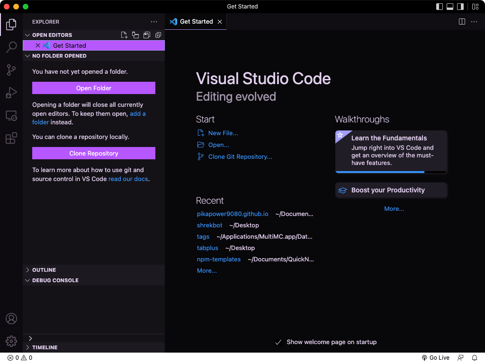
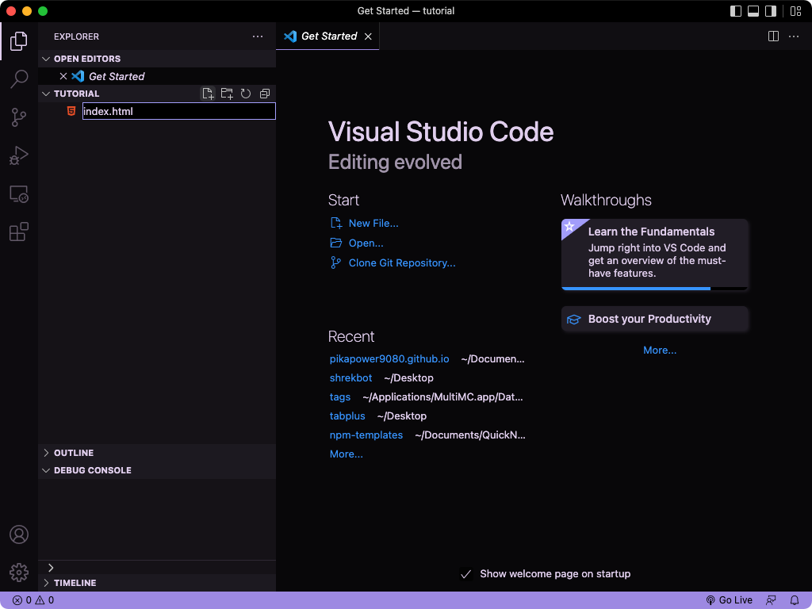
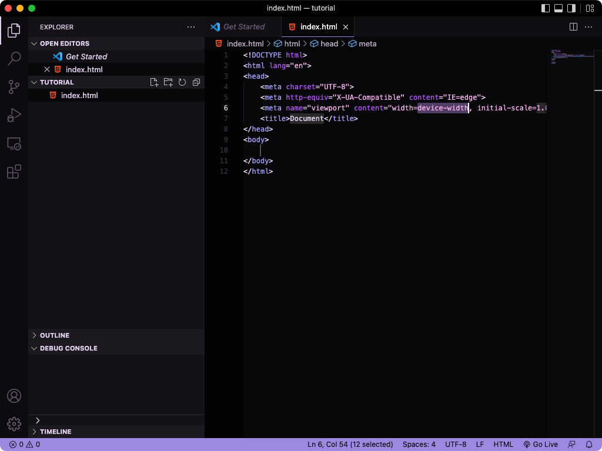
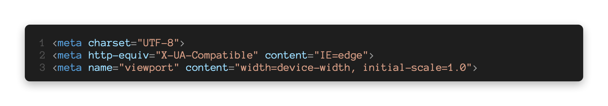
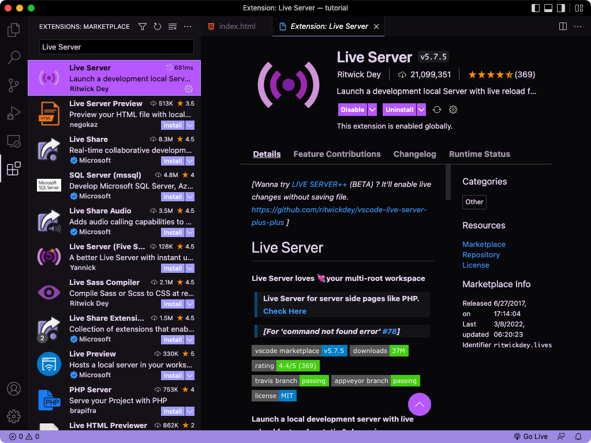
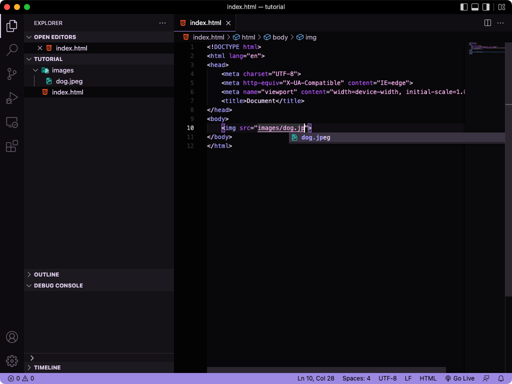

Now that you know about the basics of HTML, you're now going to learn about how to actually make something with multiple web pages that you can share. The first thing I'd recommend doing is downloading Visual Studio Code. Visual Studio Code is a program that makes programming much easier with features like autocomplete and extensions.
If you are on a device that can't install external programms then you can use Visual Studio Code for the Web, but you won't be able to acsess some of the features and extensions like liveserver, which we use later on.
Start by creating a folder for your website. This can be called whatever you want. Open VS Code and select open folder.
Use the new file icon to create a new file called index.html. Paste in the HTML shell from lesson 1 or using the magic of VS Code type an exclamation mark and press enter when a suggestion appears. This will insert an HTML shell automatically which contains certain tags in the head which I didn't go over in the first lesson. You should include these in your projects by the way.
  Let's take a look at some of the amazing things VS Code can do. If you type a less than sign to open a tag, you'll notice a list of possible tags shows up. Start typing the name and then press enter once the top suggestion is correct. You can also use the up and down arrow keys to navigate the list of suggestions. Type a greater than sign to close the tag and you'll notice VS Code automatically creates a closing tag for you if necessary. Have some fun playing with these new autocomplete features.
What about previewing your website? You can simply open the html file in your file manager to preview! You'll need to reload whenever you make a change. And don't worry about saving since VS Code does it automatically. This works fine, however I'd recommend using the extension "Live Server" to create a full preview of your entire site. Click on the icon on the left sidebar labeled Extensions and search Live Server.
Once you've installed that, go back to your file and click the little icon labeled "Go Live" near the bottom right. This will open your browser to a preview of your site that reloads automatically when you make changes.
Now that your site is in a folder, you can load in images and other assets without using a site like imgur. Just add your image file to the same folder your index.html file is in. Then in your src attribute change the url to the name of the image including it's extension. If the files are in different folders, for example if you created an "images" or "assets" folder, you have to include that too. So an HTML file in the root directory (directly inside of the folder) could access an image called "dog.jpeg" in a folder called "images" by using "images/dog.jpeg". VS Code also has a feature that does this for you. Just right click the image and select "copy relative path". Lastly, VS Code will autocomplete files while typing in an src attribute or something similar.
You can also create other HTML files in your folder for different pages on your website. Link them in the href attribute the same way you'd link an image with the src attribute.
Next